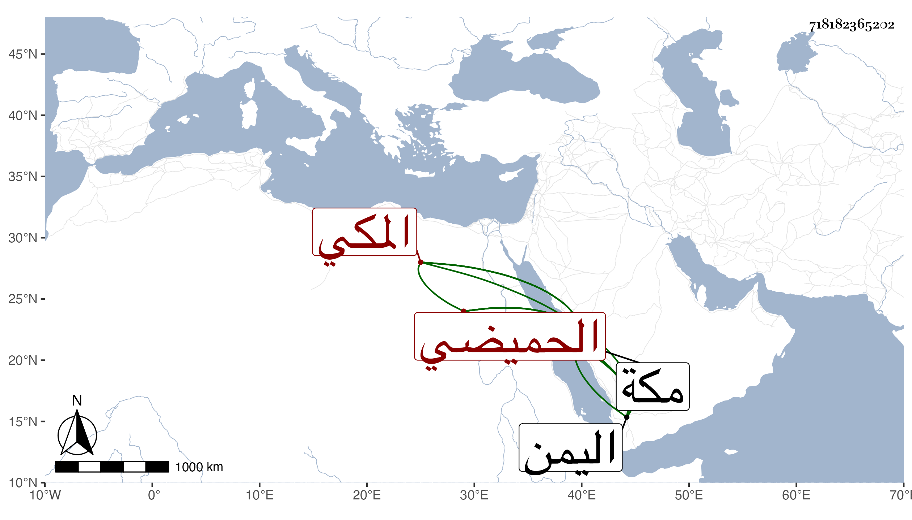

0902Sakhawi.DawLamic.ITO20230111-ara1.EIS1600.718182365202
Biography ID: 718182365202
666
مغامس بن أحمد الزباع الحميضي المكي القائد الكبير المتقدم بالشجاعة والفصاحة عند بني عجلان ولاة مكة . ممن ظلم الحاج ثم تاب وتطلب براءة الذمة ولبس المرقعة وساح باكيا على ما فرط منه وصحب عمر العرابي ورافقه إلى اليمن ثم رجع إلى مكة وخير نساءه وتعلل وأصابته جراحة في رجليه فكان يعيد ما يخرج منها من الدود إليها ويتوجه إلى الله أن لا يموت إلا بحضرة شيخه المشار إليه فأجيب فإنه تمادى في الضعف خمسة أشهر ووصل الشيخ لمكة فمات بحضرته في رابع ذي الحجة من أثناء هذا القرن . طوله ابن فهد وفات الفاسي .
